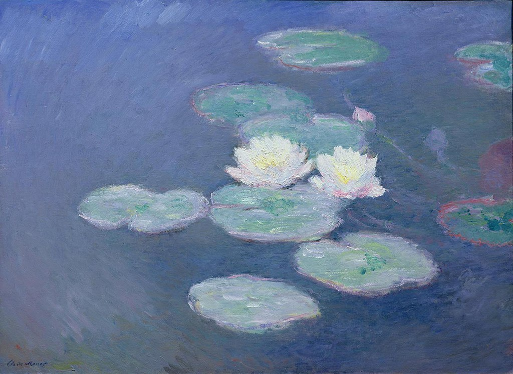

<head>
<meta charset="UTF-8" />
<meta name="keywords" content="drawing, painting" />
<meta name="description" content="drawings by Sunjy" />
<title>Sunjy</title>
<link rel="shortcut icon" type="image/x-icon" href="../../mImages/mCommon/favicon.ico" media="screen" />
<link rel="stylesheet" type="text/css" href="../../mCsses/mCommon/mCssA.css" />
<link rel="stylesheet" type="text/css" href="../../mCsses/mCommon/mCssB.css" />
<link rel="stylesheet" type="text/css" href="../../mCsses/mCommon/mCssC.css" />
<link rel="stylesheet" type="text/css" href="../../mCsses/mCommon/mCssD.css" />
<link rel="stylesheet" type="text/css" href="../../mCsses/mContent/mCssA.css" />
<link rel="stylesheet" type="text/css" href="../../mCsses/mContent/mCssB.css" />
<link rel="stylesheet" type="text/css" href="../../mCsses/mContent/mCssC.css" />
<link rel="stylesheet" type="text/css" href="../../mCsses/mContent/mCssD.css" />
</head>
<script type="text/javascript" src="../../mScripts/mContent/mContentAA.js" /></script>
<script type="text/javascript" src="../../mScripts/mContent/mContentAB.js" /></script>
<script type="text/javascript" src="../../mScripts/mContent/mContentAC.js" /></script>
<script type="text/javascript" src="../../mScripts/mContent/mContentAD.js" /></script>
<script type="text/javascript"></script> 
<script type="text/javascript">
document.write('<div class="mImgAbsolute"></div>');
/*
document.write('<p class="mFontSizeBColor" />From a white paper...</p>');
document.write('<table class="center"><tr><td>');
document.write('');
document.write('</td></tr></table>');
*/
</script>


<script type="text/javascript">
document.write('<p class="mFontSizeBColor" />Water Lilies, Evening Effect (1897)</p>');
document.write('<p class="mFontSizeSColor" />Water Lilies, Evening Effect by Claude Monet shows Monet’s love affair with his water lily pond started in the late 1800s soon after he acquired the property for his extensive gardens.<br><br>Claude Monet noticed the village of Giverny while looking out of a train window.<br><br>Monet made up his mind to move there and rented a house and the area surrounding it. Some of his most famous paintings were of his garden in Giverny.<br><br>The water garden, formed by a tributary to the Epte, with the Japanese bridge, the pond with the water lilies, the wisterias, and azaleas.<br></p>');
document.write('<table class="center" /><tr><td>');
document.write('<br>Claude Monet noticed the village of Giverny while looking out of a train window.<br><br>Monet made up his mind to move there and rented a house and the area surrounding it. Some of his most famous paintings were of his garden in Giverny.<br><br>The water garden, formed by a tributary to the Epte, with the Japanese bridge, the pond with the water lilies, the wisterias, and azaleas.<br>" />');
document.write('</td></tr></table>');
</script>


